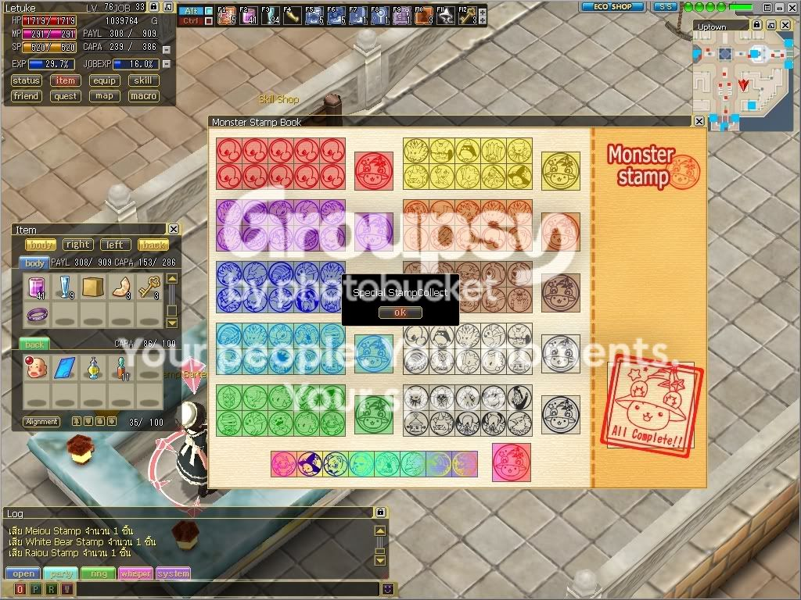
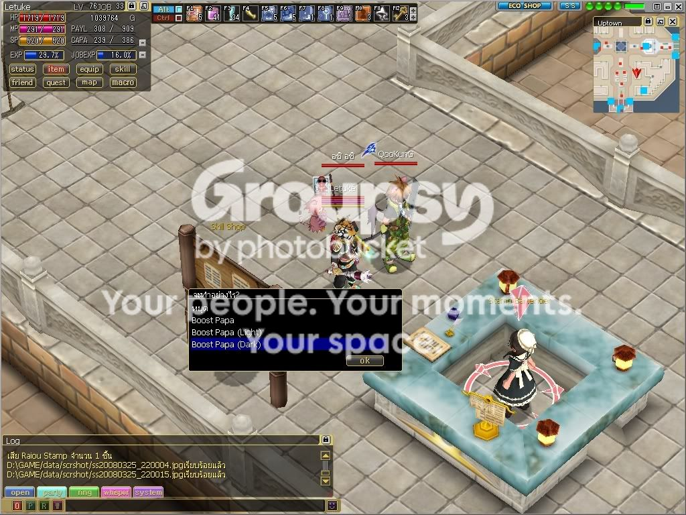

หน้า 14 จากทั้งหมด 21

โพสต์แล้ว:
อังคาร 11 มี.ค. 2008 9:52 amโดย ECO
เมื่อไหร่จะครบละนี่
โพสต์แล้ว:
พฤหัสฯ. 27 มี.ค. 2008 6:02 pmโดย ECO
ในที่สุดก็ครบแล้ว ตั้งนานแน่ะ แต่ก็ภูมิใจนะ(แลกปาป้ามารแล้วเอามาแลกอีมิล+10m อิอิ)


ต่อจากนี้ สะสมร้อยดวง เพื่อชิลเดอร์ สู้ๆ(บอสไม่เอาละ ไม่อยากเป็นเจ้าที่)
โพสต์แล้ว:
พุธ 09 เม.ย. 2008 9:43 pmโดย ECO
พวกแสตมนี่มันดรอปยากไหมถ้าเวลเราสูง ประมาณว่าไปหาที่ดันใต้ยิงเกือบๆ2 ชม. ไม่เห็นตกซักดวง ไปกัน 2 คน เวล 85 ทั้งคู่
โพสต์แล้ว:
พุธ 09 เม.ย. 2008 9:44 pmโดย ECO
krita เขียน:พวกแสตมนี่มันดรอปยากไหมถ้าเวลเราสูง ประมาณว่าไปหาที่ดันใต้ยิงเกือบๆ2 ชม. ไม่เห็นตกซักดวง ไปกัน 2 คน เวล 85 ทั้งคู่
ไม่รุสิครับ แต่ก้อไม่ยากนะ ต้องยิงซัก50-100ตัวจึงจะได้....(โชคดีก็แปปเดียว)
โพสต์แล้ว:
พุธ 09 เม.ย. 2008 9:46 pmโดย ECO
ถ้าเอาเวลน้อยไปมันจะดรอปมากกว่าเวลสูงมะ เวลน้อยก็อย่าง 60 เวลสูงก็ 85+
โพสต์แล้ว:
พุธ 09 เม.ย. 2008 9:58 pmโดย ECO
ไม่รุสิ แต่ผมคิดว่าสแตมป์ เลเวลไม่น่าจะมีผลนะ....ไม่งั้นสแตมแรร์ที่ได้จากมอนเวลน้อยๆพวกเวลน้อยๆก้อได้มาเตมแล้วล่ะมั้ง
โพสต์แล้ว:
จันทร์ 28 เม.ย. 2008 12:04 pmโดย ECO
อยากรุ้ว่า พวกที่ไม่ได้เก็บสแตมได้บูสมาได้ไงกันอะ
*ไม่ได้ซื้อ
มันจะมีกิจกรรมอะไรบ้างป่าว ถ้าไม่ไช่เติมแคชอะ
โพสต์แล้ว:
อาทิตย์ 11 พ.ค. 2008 2:53 amโดย ECO
Baixม่ou เขียน:อยากรุ้ว่า พวกที่ไม่ได้เก็บสแตมได้บูสมาได้ไงกันอะ
*ไม่ได้ซื้อ
มันจะมีกิจกรรมอะไรบ้างป่าว ถ้าไม่ไช่เติมแคชอะ
ล่าบอสเอาไงครับ ตัวที่ตร็อบก็ มีบอสปลา หมีม่วง หมีไทนี่ คิงโรเปอร์ และก็บอสไผ่อ่าคับ แล้วก็ยังมีที่ได้จากเปิดกล่องสมบัตเลข 9 10 11 ด้วยครับ ไงๆก็ลองเลือกวิธีลุ้นเอาครับ^..^4
โพสต์แล้ว:
จันทร์ 12 พ.ค. 2008 10:20 amโดย ECO
SaSuKeZa เขียน:Baixม่ou เขียน:อยากรุ้ว่า พวกที่ไม่ได้เก็บสแตมได้บูสมาได้ไงกันอะ
*ไม่ได้ซื้อ
มันจะมีกิจกรรมอะไรบ้างป่าว ถ้าไม่ไช่เติมแคชอะ
ล่าบอสเอาไงครับ ตัวที่ตร็อบก็ มีบอสปลา หมีม่วง หมีไทนี่ คิงโรเปอร์ และก็บอสไผ่อ่าคับ แล้วก็ยังมีที่ได้จากเปิดกล่องสมบัตเลข 9 10 11 ด้วยครับ ไงๆก็ลองเลือกวิธีลุ้นเอาครับ^..^4
กล่องมันยังให้บูสอยู่หรองับ-*-
โพสต์แล้ว:
จันทร์ 12 พ.ค. 2008 4:49 pmโดย ECO
จีเอ็มมาปักหมุดทีคับ
โพสต์แล้ว:
อังคาร 13 พ.ค. 2008 10:27 amโดย ECO
เก็บข้อมูลไว้ดูงับ
โพสต์แล้ว:
จันทร์ 19 พ.ค. 2008 2:23 amโดย ECO
ผมได้สแตมป์ ชินนามอนเยอะมากๆ-*- เก็บจนเบื่อ
โพสต์แล้ว:
จันทร์ 19 พ.ค. 2008 11:54 pmโดย ECO
สแตมป์นี่มันหายากจริงๆเลยนะครับทุกคน คนเก็บได้ครบ นี่เก่งมากๆเลยอ่ะ
สงสัยว่า บูส ที่เป็นโล่ นี่เข้าไทยยังครับ
โพสต์แล้ว:
อังคาร 20 พ.ค. 2008 1:57 amโดย ECO
noonong078 เขียน:สแตมป์นี่มันหายากจริงๆเลยนะครับทุกคน คนเก็บได้ครบ นี่เก่งมากๆเลยอ่ะ
สงสัยว่า บูส ที่เป็นโล่ นี่เข้าไทยยังครับ
วัดกันที่ความพยายามน่ะ
ไม่ใช่บูสเน่อมันเป็นชิลเดอร์ยังไม่เข้าไทยงับ
โพสต์แล้ว:
อังคาร 20 พ.ค. 2008 4:05 amโดย ECO
สะสมตั้งนานยังไม่ครบแลยครับ T^T